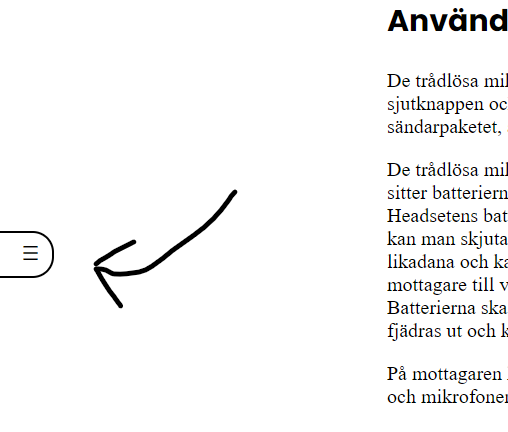

OBS, sidan är fortfarande under uppbyggnad.
Tycker du att något viktigt saknas? Skicka ett mejl: gustavholmberg.dev@gmail.com
Välkommen
Den här webbsidan är till för alla som vill använda tekniken i kyrksalen. I kyrkan finns det ett ljudsystem,
ljusbord, bildbord med kameror och en projektor med tillhörande teknik.
På den här hemsidan kan du lära dig grunderna till alla dessa system. Om du vill lära dig mer om något kan du
kontakta någon av kyrkans Konferenstekniker (martin.alund@uppsalamissionskyrka.se
eller pelle.stahl@uppsalamissionskyrka.se) eller Gustav Holmberg
(gustavholmberg.dev@gmail.com). Om du är intresserad av att bli volontär kan du
kontakta pastor Torbjörn Bådagård (torbjorn.badagard@uppsalamissionskyrka.se)
Sidans upplägg
Sidan är uppdelad i två undersidor, en per område (ljud och ljus). På varje sida finns det en innehållsförteckning som man kan ta fram med de tre sträcken till vänster. Med den kan du hoppa direkt till den del av sidan som du söker.
